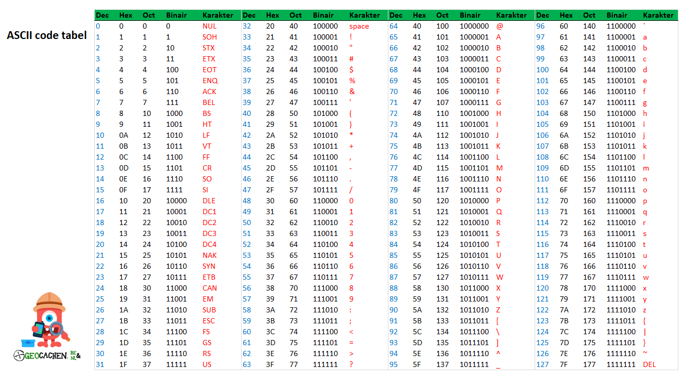

Het binaire stelsel
Wat is het binaire stelsel nou precies?
Het binaire stelsel is een begrip dat in de computerwereld
super bekend is, het is namelijk het getallensysteem waar mee gewerkt wordt zodra je iets met computers gaat
doen. Ons getallensysteem bestaat uit de cijfers 0-10, het binaire getallensysteem bestaat enkel uit de
0 en de 1. Dit klinkt misschien wat magertjes maar niks is minder waar! Met de 0 en de 1 kan je namelijk
volgens het binairestelsel ELK getal maken. De getallen 0 en 1 staan in de informatica voor een Bit, en als
een Bit de waarde 0 heeft dan staat hij als het ware 'uit' en laat hij geen pulsen door, terwijl heeft de Bit
de waarde 1 dan staat hij 'aan' en laat hij puslen door. En op deze manier worden de oprachten die een computer
moet vertaald door het systeem naar iets wat de computer uit kan voeren.
Hoe reken je met dit stelsel?
Dat gaat als volgt, het binairestelsel houdt het volgende rijtje getallen aan: 1,2,4,8,16,32,64,etc
voor de oplettende onder ons valt dit misschien op als de vermenigvuldiging van het getal 2, en dit
klopt als een bus! En als je hier nu het aan/uit systeem op toe zou passen krijg je het voldende:
stel je krijgt de binaire reeks (0,0,1,1,1) dan wordt dit de volgende som --> 4+8+16=28
Je ziet dus dat de eerste twee getallen van het rijtje uit staan en de volgende drie staan aan, dus die gaan
we bij elkaar op tellen. Acht van deze achtereenvolgende waardes heet een Byte, deze bestaat dus uit
acht Bits! Om hier zelf nog verder mee te oefenen vind je onder de afbeelding het spel 'binairy bonanza'

Speel binairy bonanza en oefen met het binaire stelsel!
De ASCII Tabel
Wat is de ASCII tabel? Om te beginnen met de letters, de letters staan voor:
American Standard Code for Information Interchange.
Wat kan je nou precies met de ASCII tabel? In deze tabel staan de betekenissen van alle karakters in
verschillende getallensystemen zoals bijvoorbeeld het binairestelsel, decimale en hexadecimalestelsel.
Je kan van 128 tekens de verschillende notatie vinden in deze tabel. Verder zijn het alleen tekens van het
toetsenbord die je kan vinden in de tabel. Een gemiddelde code wordt samengesteld door 7 ASCII tekens, maar
de uitgebreidste die je kan maken bestaat uit wel 256 tekens!
